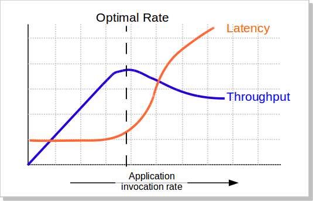

Web 性能
从工程的角度来讲，过度优化有时会造成很高昂的代价. 所以，一个好的工程师，不仅仅知道该怎么优化，更重要的是知道这里该不该优化。——摘自《切图崽的自我修养－提高项目加载速度》
响应时间（latency ）与吞吐量（Thoughput）关系

说明，建议采用中位数（Mean）评估系统的响应时间（latency）。
措施
- 首屏所需要的 JS 与 CSS ，编译内联至 HTML 中
- 对引入的资源排定优先次序
- 应用JS缓存来存储。写入 local 的时候，同时在 Cookie 中种下当前所有要缓存内容的版本( MD5 戳)就行。 因为 cookie 是会在同步访问的时候，传送到服务端的，而 local 不会，所以，我们在服务端决定要传送内容，还是传送读取 local 代码。就靠我们种下的 cookie 了
- DOM缓存（模板和数据）
- 外链。将所有的JS/CSS等静态文件，通过一个接口全部返回。达到合并外链请求的目的，我们又将这静态文件，也一一缓存到localstorage中。每个文件以自己文件内容生成的版本号为戳，标识自己的唯一性。每次服务端返回页面时，会把当前在服务器上的所有静态文件版本号，返给前端。前端首屏加载完成后，会用这些版本号与local中进行一一对比，发现不一致的 JS/CSS ，会一起发送一个合并请求。这样可以保证每个文件的缓存与版本迭代。同时，也避免了过多的外链。
- 使用 iconfont
- 不在首屏的就要异步化按需加载
- 少量静态文件的域名
- 对于小于1k的图片，我们将其变为Base64编码，并融入到CSS中，一起缓存到localstorage中
- AJAX接口最优调用
- DNS 预解析（）
- 减少HTTP重定向
- 使用CDN（内容分发网络）
- 传输压缩过的内容（Gzip压缩）
- 去掉不必要的资源
- 在客户端缓存资源
- 无状态域名
- 并行处理请求和响应
- 拼合和连接
- 服务端写相关信息到 header
- 域名分区。页面中非常多请求都是一个域名下资源时，由于浏览器同时只能打开6个连接池，而且每个链接池是对不同域名起作用，所以很多请求一个域名会出现排队现象。如果把这些请求域名分区，让请求并行，从而加快资源下载。
对于 web 前端
HTTP1.1 时代，我们针对这个协议的特性做了很多 WEB 前端优化，比如说 域名分片、文件合并压缩、雪碧图、行内代码等。但是到了 HTTP/2 时代，这些操作都是多余的了，对于同一个域名，只会建立起一个 TCP 连接。太多的域名还会增加新建连接的初始化和 TLS 握手的时间。
在采用 HTTP/2 之前，需要找出应用了这些优化的代码，分析一下它们会不会影响你的应用设计和工作流程。这样在迁移到 HTTP/2 之后，就可以着手改造它们，甚至撤销某些优化
HTTPS 的压力
HTTPS 正式启用之前还有很多问题要解决。
- 单连接开销比较大。HPACK 数据压缩算法会更新两端的查找表。这样可以让连接有状态，而破坏状态就意味着要重建查找表，另外单连接占用内存较多
- 全站点 HTTPS 的改造。可能涉及到 web，CDN，native 客户端。
其他问题
- 需要抛弃针对 HTTP/1.x 的优化。
- 对下载大文件不利。
- 你的客户也许不在乎。你的客户很可能不在乎他分享的自家猫咪的视频是否受到 TLS 和 HTTP/2 的保护。
参考
- 前端性能优化 - 资源预加载：
DNS-prefetch、subresource和标准的prefetch、preconnect、prerender - 切图崽的自我修养－优化图片加载流程
- Dubbo 用户指南
- 前端小站[聊一聊系列]
- 性能不好怎么办？对着清单撸一遍
- 极快的node.js：来自领英（LinkedIn）移动的10个性能技巧
- 为高负载网络优化 Nginx 和 Node.js
- 未来已到——HTTP/2